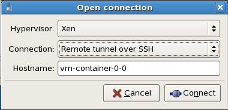

Xen Roll: Users Guide: 
| ||
|---|---|---|
| Prev | Chapter 3. Using the Xen Roll | Next |
After you install a VM Server and at least one VM Container, you are ready to install a virtual cluster.
We'll use the following illustration as a guide to help keep track of the names of the physical machines and the virtual machines.
In the above picture, "espresso.rocksclusters.org" is a physical machine. Also, "vm-container-0-0" and "vm-container-0-1" are physical machines that were kickstarted by "espresso". The machine "frontend-0-0-0" is a virtual machine that is hosted by "espresso". The machines "hosted-vm-0-0-0" and "hosted-vm-0-1-0" are VMs that are associated with "frontend-0-0-0" (they are all in the same VLAN). The names "frontend-0-0-0", "hosted-vm-0-0-0" and "hosted-vm-0-1-0" are names used by physical machine to control the VMs (e.g., to start and stop them).
The names in the virtual cluster look like the names in a traditional cluster -- the frontend is named "vi-1.rocksclusters.org" and its compute nodes are named "compute-0-0" and "compute-0-1". If you login to "vi-1.rocksclusters.org", you would be hard pressed to tell the difference between this virtual cluster and a traditional physical cluster.
 | You must select your own FQDN and IP address for your virtual frontend. The FQDN "vi-1.rocksclusters.org" and the IP address "137.110.119.118" are managed by UCSD and should not be used by you. They are only used here to show you a concrete example. |
First, we'll add a virtual cluster to the VM Server's database. In this example, we'll add a frontend with the FQDN of "vi-1.rocksclusters.org", IP of "137.110.119.118" and we'll associate 2 compute nodes with it:
# rocks add cluster fqdn="vi-1.rocksclusters.org" ip="137.110.119.118" num-computes=2 |
The above command will take some time and then output something similar to:
created frontend VM named: frontend-0-0-0 created compute VM named: hosted-vm-0-0-0 created compute VM named: hosted-vm-0-1-0 |
The command adds entries to the database for the above nodes and establishes a VLAN that will be used for the private network (eth0 inside the VM).
Info about all the defined clusters on the VM Server (including the physical cluster) can be obtained with the command: rocks list cluster:
# rocks list cluster FRONTEND CLIENT NODES TYPE espresso.rocksclusters.org: ---------------- physical : vm-container-0-0 physical : vm-container-0-1 physical vi-1.rocksclusters.org: ---------------- VM : hosted-vm-0-0-0 VM : hosted-vm-0-1-0 VM |
Now we need to install the VM frontend. This is done by "starting" the VM:
# rocks start host vm vi-1.rocksclusters.org |
To interact with the VM frontend's console, you need to start "virt-manager"
# virt-manager |
This will display a screen similar to:
Double click on the "localhost" entry and then you'll see:

To bring the up the console for the VM frontend, double click on "frontend-0-0-0". Now you should see the familiar frontend installation screen:
In the "Hostname of Roll Server" field, insert the FQDN of your VM Server (the name of the physical machine that is hosting the VM frontend). Then click "Download".
From here, you want to follow the standard procedure for bringing up a frontend starting at Step 8.
After the VM frontend installs, it will reboot. After it reboots, login and then we'll begin installing VM compute nodes.
Login to the VM frontend (the virtual machine named "vi-1.rocksclusters.org" in the example picture at the top of this page), and execute:
# insert-ethers |
Select "Compute" as the appliance type.
Back on the VM Server, we'll need to start the first VM that hosts the VM compute node. In this example, the name is "hosted-vm-0-0-0".
# rocks start host vm hosted-vm-0-0-0 install=yes |
Back in the VM frontend, you should see insert-ethers discover the VM compute node:
Repeat for each VM compute node.
You now have a virtual cluster up and running within your physical cluster.
You can connect to a virtual compute node's console in a manner similar to connecting to the virtual frontend's console. Again, bring up "virt-manager":
# virt-manager |
We'll connect to the console for the virtual compute node "compute-0-0". In the example configuration described at the top of this page, The VM "compute-0-0" is hosted on the physical machine named "vm-container-0-0" so we'll need to tell "virt-manager" to open a connection to "vm-container-0-0".
Inside "virt-manager", click on "File" then "Open connection...". This brings up a window that looks like:

Now change the "Connection:" field to "Remote tunnel over SSH" and enter "vm-container-0-0" for the "Hostname:" field:

Then click "Connect".
In the "virt-manager" window, you should see something similar to:

Double click on "vm-container-0-0" and then you'll see:

Now to connect to the compute node's console, double click on "hosted-vm-0-0-0". Recall that from the perspective of the physical frontend (the VM Server), "hosted-vm-0-0-0" is the name for the VM "compute-0-0" (again, see the figure at the top of this page).
You should now see the console for compute-0-0: